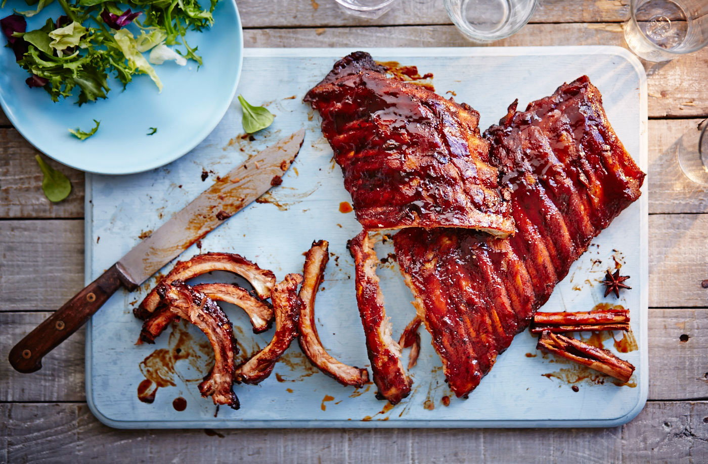

BBQ Ribs Recipe

Ingredients
Ribs
- 2kg Ribs
- 2 teaspoons garlic powder
- 1 teaspoon onion powder
- 2 teaspoons paprika
- 2 teaspoons salt
- 1 teaspoon cracked black pepper
- 1/2 teaspoon cumin
- 1 teaspoon chilli powder
- 2 tablespoons olive oil
Sauce
- 2 cups (500ml) barbecue sauce
- 3 tablespoons minced garlic
- 2 tablespoons olive oil>
- 1 tablespoon Worcestershire sauce
- 1/2-1 tablespoon cayenne pepper
- 1 teaspoon salt
Steps
- Preheat oven to 350°F (180°C).
- Peel off tough membrane that covers the underside/bony side of the ribs. Place on a baking sheet or tray lined with foil (or parchment paper).
- Combine together garlic powder, onion powder, paprika, salt, pepper, cumin and chili or Cayenne. Sprinkle seasoning over ribs and drizzle with oil. Rub the seasoning all over the ribs on both sides. Cover tray with foil and bake for 2 hours
- During the last 5 minutes of cook time, mix together sauce ingredients.
- Remove ribs from the oven, remove foil and spread the tops of the ribs with the barbecue sauce mixture.
- Increase oven temperature to 460°F (240°C). Return ribs to the oven, uncovered, and bake for a further 10 minutes. Change oven settings to broil (or grill) on medium-high heat to lightly char and caramelise the edges (about 3 minutes).
- Rest for 10 minutes to allow the juices to recirculate back into the meat before slicing.
- Enjoy!